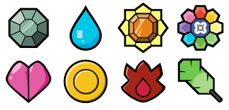

Pokemon é um desenho japonês criado em 1995 por Satoshi Tajiri.
A franquia consiste em aventuras pelo mundo, caçando criaturas nomeadas de pokemon, atualmente a franquia pokemon existe em
Jogos, Séries, Animações, Filmes e muitas outras mídias.
Nossa página abordará a primeira geração de Pokemons mostrada no desenho Pokemon (2000),
onde os eventos ocorrem na região de Kanto, com Ash e seu amigo Pikachu!
Veja mais sobre os personagens abaixo:
A história de Ash começa no seu aniversário de 10 anos,
quando ele ja pode se tornar um treinador pokemon,
entretanto Ash pelo seu jeito desajeitado perde o horário da escolha do seu
pokemon inicial
com isso professor Carvalho entrega a Ash o Pikachu, que se tornaria o seu
melhor amigo!
A região de Kanto é a primeira apresentada para o telespectador, seja em suas midías
de jogos, qunato em animes, animações e etc.
A região de Kanto possui 151 diferentes pokemons, que você pode vêlos na nossa
Pokedex
A região também possui 8 Ginásios, sendo eles de :
Fogo, Água, Psiqíco, Fantasma, Planta, Elétrico, Pedra, Grama.
Ao completar eles, você poderá ter 8 insignías!

Com elas você poderá também participar da liga Pokemon, para batalhar e concorrer
a ser o melhor e maior mestre pokemon do mundo!